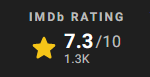

Meet The Cast Page!
In the heart of the 1970s, amidst a flurry of feathered hair and flared jeans, Gru (Steve Carell) is growing up in the suburbs.
A fanboy of a supervillain supergroup known as the Vicious 6, Gru hatches a plan to become evil enough to join them.
Luckily, he gets some mayhem-making back-up from his loyal followers, the Minions. Together, Kevin, Stuart, Bob, and Otto -
a new Minion sporting braces and a desperate need to please - deploy their skills as they and Gru build their first lair, experiment
with their first weapons, and pull off their first missions. When the Vicious 6 oust their leader, legendary fighter Wild Knuckles (Alan Arkin),
Gru interviews to become their newest member. It doesn't go well (to say the least), and only gets worse after Gru outsmarts them and suddenly
finds himself the mortal enemy of the apex of evil. On the run, Gru will turn to an unlikely source for guidance, Wild Knuckles, and discover
that even bad guys need a little help from their friends
